Gráficos con R
Disponemos de funciones de alto nivel que producen gráficos completos
(plot(),boxplot(),`hist()…) y
funciones de bajo nivel que añaden elementos a un gráfico ya creado
(lines(),points(),abline()…).
Ejercicio 1
Vamos a generar un gráfico de densidades del ancho de los sépalos
para cada una de las especies de flores presentes en la base de datos
iris.
# Generamos tres submuestras
setosa <- iris$Sepal.Width[iris$Species==___]
versi <- iris$Sepal.Width[iris$Species==___]
virgi <- iris$Sepal.Width[iris$Species==___]
# Utilizamos una función de alto nivel plot() para setosa
plot(density(___),ylim=c(0,1.5),col=1,main="Sepal.width y Species")
# Añadimos las densidades de versicolor y virginica
lines(density(___),col=2)
lines(density(___),col=3)
# Añadimos elementos visuales en el eje x correspondiente a las observaciones
# en cada submuestra
rug(___,col=1)
rug(___,col=2)
rug(___,col=3)
# Añadimos una leyenda al gráfico
legend('topright',c('Setosa','Versicolor','Virginica'),col=c(1:3),lty=rep(1,3),bg='gray99')# Especifica los nombres de las submuestras en cada partesetosa <- iris$Sepal.Width[iris$Species=='setosa']
versi <- iris$Sepal.Width[iris$Species=='versicolor']
virgi <- iris$Sepal.Width[iris$Species=='virginica']
plot(density(setosa),ylim=c(0,1.5),col=1,main="Sepal.width y Species")
lines(density(versi),col=2)
lines(density(virgi),col=3)
rug(setosa,col=1)
rug(versi,col=2)
rug(virgi,col=3)
legend('topright',c('Setosa','Versicolor','Virginica'),col=c(1:3),lty=rep(1,3),bg='gray99')R dispone además de dispositivos gráficos que permite la gestión de los objetos gŕaficos creados en la sesión de trabajo.
Ejercicio 2
Vamos a generar 5 diagramas de dispersión con datos aleatorios
(variables X e Y con 100 observaciones cada uno). Luego se guardarán
como gráfico1.png, gráfico2.png,
gráfico3.png, gráfico4.pngy
gráfico5.png.
for(i in 1:5) {
png(file=paste0(___,i,___))
X <- rnorm(___)
Y <- rnorm(___)
plot(___,___, main= 'Diagrama de puntos',
xlab='', ylab='',pch=16)
abline(lm(___~___),col='green')
dev.off()
}# Nombra los archivos a generar con el dispositivo png()
# Especifica tamaño de muestras
# Especifica variables en funciones gráficasfor(i in 1:5) {
png(file=paste0('grafico',i,'.png'))
X <- rnorm(100)
Y <- rnorm(100)
plot(X,Y, main= 'Diagrama de puntos',
xlab='', ylab='',pch=16)
abline(lm(Y~X),col='green')
dev.off()
}
for(i in 1:5)
plot(magick::image_read(list.files()[stringr::str_detect(list.files(),'.png')][i]))Ejercicio 3
Los objetos fórmula son de gran utilidad a la hora de generar
gráficos multivariantes. La instalación básica de R incluye algunas
funciones predefinidas como boxplot() que aceptan como
argumento de entrada objetos de tipo fórmula. Realiza un diagrama de
cajas agrupadas con los datos ToothGrowth en el que la
variable de respuesta len se representará gráficamente para
cada nivel de dosis (variable dose) y de tipo de suplemento
(supp).
boxplot(___ ~ ___:___, data = ___, boxwex = 0.5,col = c("orange","yellow"),
main = "Crecimiento dental en cobayas",
xlab = "Vitamina C (mg)", ylab = "Longitud", sep = ":")# Añade las variables y el nombre de la base de datosboxplot(len ~ dose:supp, data = ToothGrowth, boxwex = 0.5,col = c("orange","yellow"),
main = "Crecimiento dental en cobayas",
xlab = "Vitamina C (mg)", ylab = "Longitud", sep = ":")Ejercicio 4
Los parámetros gráficos en la instalación básica de R con la función
par() nos permiten configurar el comportamiento de las
funciones gráficas en una gran cantidad de aspectos. ¿Cuántos parámetros
gráficos hay? Inspecciona los valores por defecto para el color y el
tipo de línea; cámbialos por rojo y línea discontinua.
length(par())
par(___,___) # Qué color y tipo de línea? #
par(col=___,lty=___)# Los parámetros gráficos suelen ser cadenas o valores numéricoslength(par())
par('col','lty') # Qué color y tipo de línea? #
par(col='red',lty='dashed')Ejercicio 5
Representa distintos tipos de líneas mediante la función
plot() de R. Concretamente, representa en una sola ventana
gráfica un gráfico de lineas continuas, discontinua con lineas, con
puntos, con puntos y líneas, con dos líneas y con líneas largas.
set.seed(123)
y <- rnorm(20)
par(mfrow=c(3,2))
plot(y,type=___, lty=___); plot(y,type=___, lty=___)
plot(y,type=___, lty=___); plot(y,type=___, lty=___)
plot(y,type=___, lty=___); plot(y,type=___, lty=___)# El argumento type acepta distintos tipos de elementos gráficos
# Consulta la ayuda de par() para saber los tipos de líneasset.seed(123)
y <- rnorm(20)
par(mfrow=c(3,2))
plot(y,type='l', lty='solid'); plot(y,type='l', lty='dashed')
plot(y,type='l', lty='dotted'); plot(y,type='l', lty='dotdash')
plot(y,type='l', lty='twodash'); plot(y,type='l', lty='longdash')Ejercicio 6
Representa distintos tipos de símbolos mediante la función
plot() de R. Concretamente, representa en una sola ventana
gráfica un gráfico de círculos, triángulos, cruces y asteriscos.
set.seed(123)
y <- rnorm(20)
par(mfrow=c(2,2))
plot(y,type=___, pch=___); plot(y,type=___, pch=___)
plot(y,type=___, pch=___); plot(y,type=___, pch=___)# El argumento type acepta distintos tipos de elementos gráficos
# Consulta la ayuda de par() para saber los tipos de símbolosset.seed(123)
y <- rnorm(20)
par(mfrow=c(2,2))
plot(y,type='p', pch=1); plot(y,type='p', pch=2)
plot(y,type='p', pch=3); plot(y,type='p', pch=8)Sobre la combinación de gráficos en una misma ventana, también se puede utilizar la función layout:
layout(matrix(c(1,2)),heights=c(1.5,1))
layout.show(2)layout(matrix(c(1,2)),heights=c(1.5,1))
x<-rnorm(10)
hist(x)
plot(x,type='l')Ejercicio 7
- R incorpora una cantidad ingente de paletas tanto en la versión básica como en paquetes adicionales (por ejemplo, https://github.com/johnmackintosh/metallicaRt). Las paletas suelene aceptar uno o varios tipos de argumentos de entrada para especificar el color: cadenas de caracteres, valores numéricos, código hexadecimal…
palette()
plot(1:8, 1:8, col=1:8, pch=19, cex=3, xlab="", ylab="") # Observa distintos tipos de codificaciones de colores en palette()
# El gráfico representa 8 colores distintosEjercicio 8
Utiliza cuatro de las 4 paletas básicas en R para representar gráficamente un vector numérico de 15 valores.
temp=1:15
par(mfrow=c(2,2))
barplot(temp, col=rainbow(___), main="rainbow")
barplot(temp, col=heat.colors(___), main="heat.colors")
barplot(temp, col=terrain.colors(___), main="terrain.colors")
barplot(temp, col=topo.colors(___), main="topo.colors")# Especifica el valor numérico adecuado dentro de cada argumento coltemp=1:15
par(mfrow=c(2,2))
barplot(temp, col=rainbow(15), main="rainbow")
barplot(temp, col=heat.colors(15), main="heat.colors")
barplot(temp, col=terrain.colors(15), main="terrain.colors")
barplot(temp, col=topo.colors(15), main="topo.colors")Ejercicio 9
Utilizaremos ahora un ejemplo de Murrell (2006) para ver cómo se puede anotar un gráfico paso a paso.
x <- 1:10
set.seed(123)
y <- matrix(sort(rnorm(30)), ncol=3)
plot(x, y[,1], ylim=range(y), ann=FALSE, axes=FALSE,type="l", col="grey")x <- 1:10
set.seed(123)
y <- matrix(sort(rnorm(30)), ncol=3)
plot(x, y[,1], ylim=range(y), ann=FALSE, axes=FALSE,type="l", col="grey")
box(col="grey") # Crear ejes # x <- 1:10
set.seed(123)
y <- matrix(sort(rnorm(30)), ncol=3)
plot(x, y[,1], ylim=range(y), ann=FALSE, axes=FALSE,type="l", col="grey")
box(col="grey")
points(x, y[,1]) # Representar puntos # x <- 1:10
set.seed(123)
y <- matrix(sort(rnorm(30)), ncol=3)
plot(x, y[,1], ylim=range(y), ann=FALSE, axes=FALSE,type="l", col="grey")
box(col="grey")
points(x, y[,1])
lines(x, y[,2], col="grey") # Representar una segunda línea #
points(x, y[,2], pch=2) # Añadir puntos en la segunda línea #x <- 1:10
set.seed(123)
y <- matrix(sort(rnorm(30)), ncol=3)
plot(x, y[,1], ylim=range(y), ann=FALSE, axes=FALSE,type="l", col="grey")
box(col="grey")
points(x, y[,1])
lines(x, y[,2], col="grey")
points(x, y[,2], pch=2)
lines(x, y[,3], col="grey") # Representar una tercera línea #
points(x, y[,3], pch=3) # Representar cruces en la tercera línea # x <- 1:10
set.seed(123)
y <- matrix(sort(rnorm(30)), ncol=3)
plot(x, y[,1], ylim=range(y), ann=FALSE, axes=FALSE,type="l", col="grey")
box(col="grey")
points(x, y[,1])
lines(x, y[,2], col="grey")
points(x, y[,2], pch=2)
lines(x, y[,3], col="grey")
points(x, y[,3], pch=3)
title('puntos() & lineas()') # Añadir título #Ejercicio 10
Podemos modificar la posición de las anotaciones que incorporemos en
los gráficos de R. Una forma básica de anotar un gráfico es mediante la
función text().
x <- c(4, 5, 2, 1)
y <- x
plot(x, y, ann=FALSE, axes=FALSE, col="grey", pch=16) # Parámetro pch=16 representa puntos #
points(3, 3, col="grey", pch=16) # Equivalente pero es una función de bajo nivel --> Requiere plot() previamente #
box(col="grey")
text(x,y,c('abajo','izqda','arriba','drcha'),pos=1:4) # Parámetro pos=1:4 #
text(3,3,'overlay') # Posición superpuesta por defecto #
title('text()')Ejercicio 11
Una forma más avanzada de anotación es la superposición de output.
with(ToothGrowth,
{
boxplot(len ~ supp, border="grey",
col="light grey", boxwex=0.5)
points(jitter(rep(1:2, each=30), 0.5),
unlist(split(len, supp)),
cex=0.5, pch=16)
}) Ejercicio 12
Podemos anotar los gráficos con símbolos, fórmulas y expresiones matemáticas.
set.seed(123)
x <- rnorm(100)
y <- rnorm(100)
mylm <- lm(y~x) # Regresión lineal
plot(x,y) # Representar diagrama de puntos
abline(mylm,col='red') # Dibujar línea MCO
b0 <- round(mylm$coefficients[1],2) # Intercepto
b1 <- round(mylm$coefficients[2],2) # Pendiente
title(main=expression(paste('X,Y~N(',mu,',',sigma,')')))
legend('topright',legend = substitute(
paste(hat(beta)[0], "=",beta0, ", ", hat(beta)[1], "=",beta1),
list(beta0 = b0, beta1 = b1)),bty='n')Equivalentemente mediante el paquete latex2exp:
library(latex2exp)
set.seed(123)
x <- rnorm(100)
y <- rnorm(100)
mylm <- lm(y~x) # Regresión lineal
plot(x,y) # Representar diagrama de puntos
abline(mylm,col='red') # Dibujar línea MCO
b0 <- round(mylm$coefficients[1],2) # Intercepto
b1 <- round(mylm$coefficients[2],2) # Pendiente
title(main=TeX('$X,Y\\sim N(\\mu,\\sigma)$'))
legend('topright',legend = TeX(paste0('$\\hat{\\beta}_0=',b0,', \\hat{\\beta}_1=',b1,'$')),bty='n')El paquete ggplot2
ggplot2 (Wickham, 2016) es una implementación en R de la
llamada gramática de los gráficos. Se puede instalar solo o con
tidyverse. En el siguiente enlace
se encuentra una tabla con sus principales funcionalidades. En su forma
básica se requieren unos datos, un sistema de coordenadas y unos
elementos geométricos para representar un gráfico.
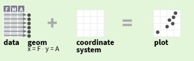
Para representar los valores de las variables y visualizar los datos mediante elementos gráficos se usan los aesthetics: color, tamaño, coordenadas (x,y). Se trata de crear un lienzo vacío en el que disponer todos los elementos que posibiliten una buena visualización de los datos.
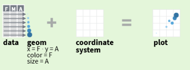
Hay una función muy similar a la función en la instalación básica de
R plot(): qplot(). Permite crear distintos
tipos de gráficos rápida y fácilmente aunque es menos flexible que la
función ggplot(). La función qplot() tiene el
formato siguiente:
qplot(x, y=NULL, data, geom="auto", xlim = c(NA, NA), ylim =c(NA, NA))
Ejercicio 1
Realiza el siguiente gráfico con la función qplot()
(NOTA: la base de datos se llama PANAS):
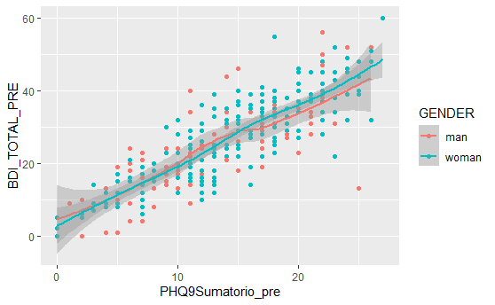
qplot(x=___,
y=___,
geom=c(___,___),
color=___,data=___)# Especifica las variables y la base de datos en su apartado
# Especifica los geoms adecuadosqplot(x=PHQ9Sumatorio_pre,
y=BDI_TOTAL_PRE,
geom=c('point','smooth'),
color=GENDER,data=PANAS)Ejercicio 2
Realiza el siguiente gráfico con la función qplot():
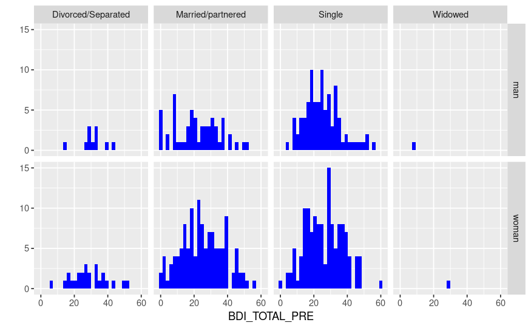
qplot(x=____,
geom=c(___),fill=I(___),
data=___,facets=___)# Especifica las variables y la base de datos en su apartado
# Especifica los geoms adecuadosqplot(x=BDI_TOTAL_PRE,
geom=c('histogram'),fill=I('blue'),
data=PANAS,facets=GENDER~CIVIL_STATUS)Ejercicio 3
Realiza el siguiente gráfico con la función qplot():
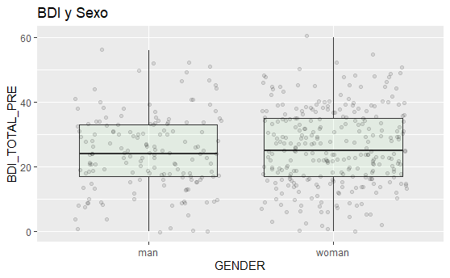
qplot(___,___,
data=___,
geom=c(___,___),
fill=I(___),alpha=I(.1),
main='BDI y Sexo')# Especifica las variables y la base de datos en su apartado
# Especifica los geoms adecuadosqplot(GENDER,BDI_TOTAL_PRE,
data=PANAS,
geom=c('boxplot','jitter'),
fill=I('lightgreen'),alpha=I(.1),
main='BDI y Sexo')La forma habitual de usar el paquete es con la función
ggplot(). La llamada general a la función requiere
especificar la base de datos, las variables a usar y los elementos
geométricos/gráficos:
ggplot(data = <DATA>) + <GEOM_FUNCTION>(mapping = aes(<MAPPINGS>))
Ejercicio 1
Realiza el siguiente gráfico con la función
ggplot():
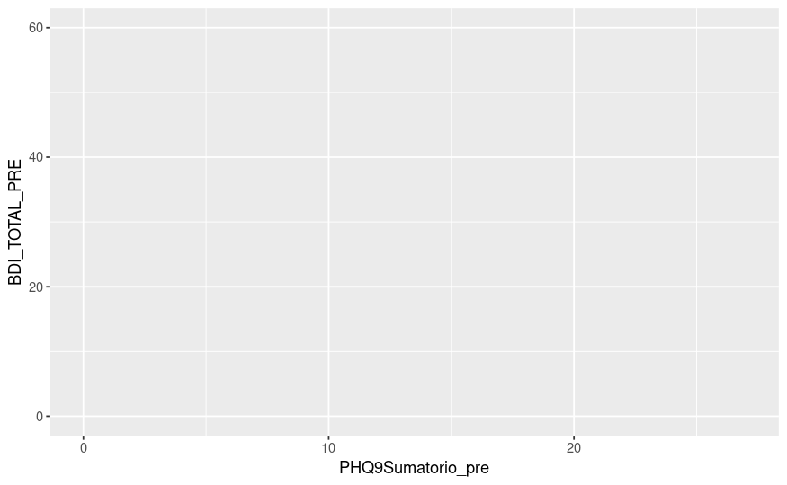
ggplot(___,aes(x=___,y=___))# Especifica las variables y la base de datos en su apartadoggplot(PANAS,aes(x=PHQ9Sumatorio_pre,y=BDI_TOTAL_PRE))Ejercicio 2
Declarados datos y variables en el entorno aes(),
podemos añadir elementos geométricos como líneas, puntos y curvas de
densidad: geom_line(), geom_point() y
geom_density()…
Realiza el siguiente gráfico con la función
ggplot():
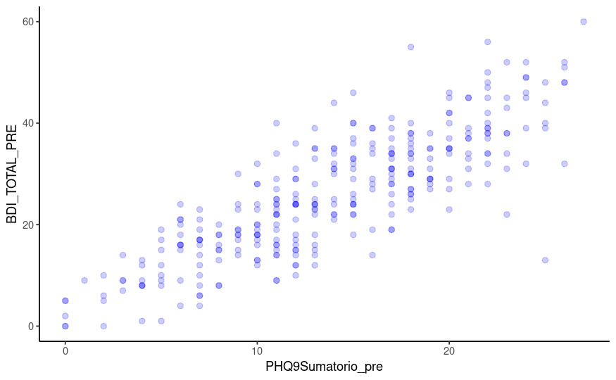
ggplot(___,aes(x=___,y=___)) +
geom_point(size=2,color=___,alpha=.2) +
theme_classic()# Especifica las variables y la base de datos en su apartado
# Especifica el color de los puntosggplot(PANAS,aes(x=PHQ9Sumatorio_pre,y=BDI_TOTAL_PRE)) +
geom_point(size=2,color='blue',alpha=.2) +
theme_classic()Ejercicio 3
El paquete ggplot2 tiene procedimientos estadísticos
implementados para obtener distribuciones de frecuencias, análisis
exploratorio y ajustes lineales y no lineales, entre otros:
geom_bar(), geom_smooth(),
stat_summary(), etcétera…
Realiza el siguiente gráfico con la función
ggplot():
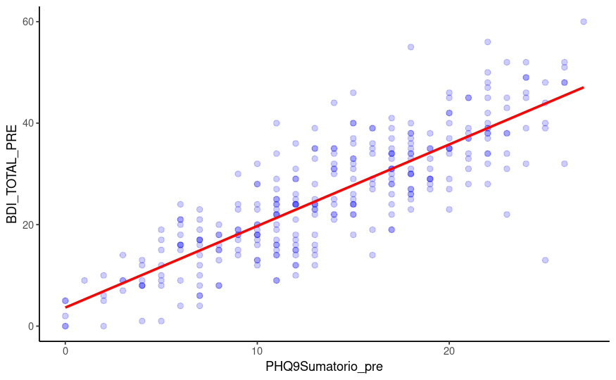
ggplot(___,aes(x=___,y=___)) +
geom_point(size=2,color=___,alpha=.2) +
geom_smooth(method=___,color=___,se=FALSE) +
theme_classic()# Especifica las variables y la base de datos en su apartado
# Especifica el color de los puntos y la recta ajustada
# El método lm genera un ajuste linealggplot(PANAS,aes(x=PHQ9Sumatorio_pre,y=BDI_TOTAL_PRE)) +
geom_point(size=2,color='blue',alpha=.2) +
geom_smooth(method='lm',color='red',se=FALSE) +
theme_classic()Ejercicio 4
Para practicar la especificación de colores manualmente en ggplot2, vamos a generar un gráfico de barras agrupadas para nivel educativo y fase de detección de la enfermedad. Utilizaremos los colores “#00AFBB”, “#E7B800” y “#FC4E07” y tamaño de fuente del texto 20:
datKendall <- read_sav("data/ExCor3.sav")
datKendall$education <- as_factor(datKendall$education)
datKendall$phase <- as_factor(datKendall$phase)
df <- datKendall %>%
group_by(education, phase) %>%
summarise(counts = n())
p <- ggplot(df, aes(x = phase, y = counts)) +
geom_bar(
aes(color = education, fill = education),
stat = "identity", position = position_dodge(0.8),
width = 0.7
) +
scale_color_manual(values = c(___,___,___))+
scale_fill_manual(values = c(___,___,___)) + theme_bw()
p+theme(axis.text.x = element_text(size = ___),
axis.text.y = element_text(size = ___),
axis.title.x = element_text(size = ___),
axis.title.y = element_text(size = ___),
legend.text=element_text(size= ___),
legend.title=element_text(size= ___),
legend.position.inside = c(.2, .8))# Especifica las variables y la base de datos en su apartado
# Especifica el vector de colores HEX en las funciones scale_color_fill y scale_fill_manual
# Especifica los tamaños de letra 20 en todos los argumentos sizedatKendall <- read_sav("data/ExCor3.sav")
datKendall$education <- as_factor(datKendall$education)
datKendall$phase <- as_factor(datKendall$phase)
df <- datKendall %>%
group_by(education, phase) %>%
summarise(counts = n())
p <- ggplot(df, aes(x = phase, y = counts)) +
geom_bar(
aes(color = education, fill = education),
stat = "identity", position = position_dodge(0.8),
width = 0.7
) +
scale_color_manual(values = c("#00AFBB", "#E7B800", "#FC4E07"))+
scale_fill_manual(values = c("#00AFBB", "#E7B800", "#FC4E07")) + theme_bw()
p+theme(axis.text.x = element_text(size = 20),
axis.text.y = element_text(size = 20),
axis.title.x = element_text(size = 20),
axis.title.y = element_text(size = 20),
legend.text=element_text(size= 20),
legend.title=element_text(size= 20),
legend.position.inside = c(.2, .8))Ejercicio 5
coord_XXX() permite usar distintos sistemas de
coordenadas (cartesianas, polares, mapas, transformadas…)
Realiza el siguiente gráfico con la función
ggplot():
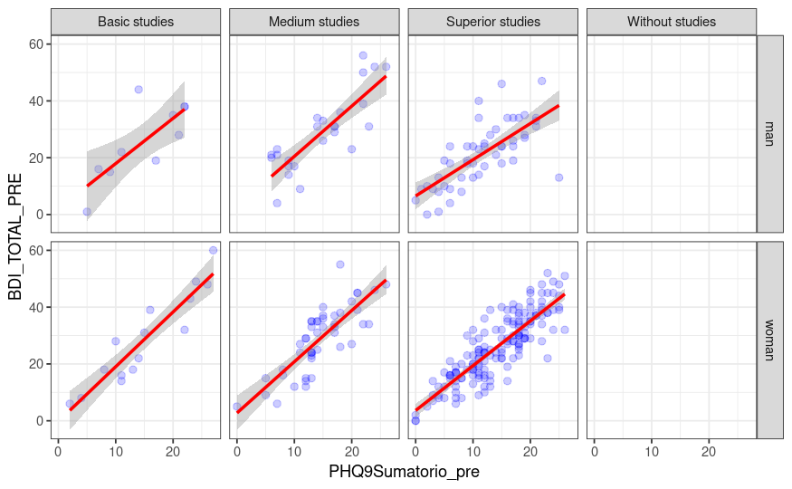
library(gridExtra)
p1 <- ggplot(___,aes(x=___)) +
geom_bar(fill=___) +
theme_bw()
p2 <- ggplot(___,aes(x=___)) +
geom_bar(fill=___) +
coord_polar() +
theme_bw()
grid.arrange(___,___,nrow=1)# Especifica las variables y la base de datos en su apartado
# Especifica el color de las barras
# Especifica los gráficos a agrupar con grid.arrangelibrary(gridExtra)
p1 <- ggplot(PANAS,aes(x=EDUCATION_LEVEL)) +
geom_bar(fill='red') +
theme_bw()
p2 <- ggplot(PANAS,aes(x=EDUCATION_LEVEL)) +
geom_bar(fill='red') +
coord_polar() +
theme_bw()
grid.arrange(p1,p2,nrow=1)Ejercicio 6
Podemos llevar a cabo gráficos con paneles multivariantes gracias a
las funciones facet_grid() y facet_wrap()
Realiza el siguiente gráfico con la función
ggplot():

ggplot(___,aes(x=___,y=___)) +
geom_point(size=2,color=___,alpha=.2) +
geom_smooth(method='lm',color=___) +
theme_bw() +
facet_grid(___~___)# Especifica las variables y la base de datos en su apartado
# Especifica el color de los puntos y el ajuste lineal
# facet_grid utiliza una especie de objeto fórmulaggplot(PANAS,aes(x=PHQ9Sumatorio_pre,y=BDI_TOTAL_PRE)) +
geom_point(size=2,color='blue',alpha=.2) +
geom_smooth(method='lm',color='red') +
theme_bw() +
facet_grid(GENDER~EDUCATION_LEVEL)Ejercicio 7
Se pueden anotar los gráficos con texto, formas geométricas y otros elementos.
Realiza el siguiente gráfico con la función
ggplot():
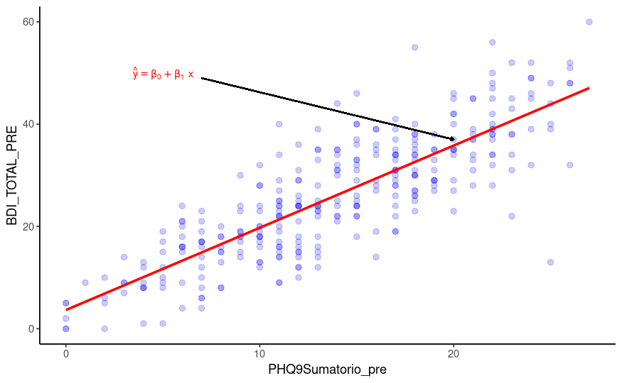
ggplot(___,aes(x=___,y=___)) +
geom_point(size=2,color=___,alpha=.2) +
geom_smooth(method='lm',color=___,se=FALSE) +
theme_classic() +
annotate(geom='text',x=5,y=50,
label="hat(y)==hat(beta)[0]+hat(beta)[1]~x",col=___,
parse=TRUE,size=3) +
geom_segment(aes(x = 7, y = 49, xend = 20, yend = 37),
arrow = arrow(length = unit(0.1, "cm")))# Especifica las variables y la base de datos en su apartado
# Especifica el color de los puntos, del ajuste lineal y de la fórmula
# facet_grid utiliza una especie de objeto fórmulaggplot(PANAS,aes(x=PHQ9Sumatorio_pre,y=BDI_TOTAL_PRE)) +
geom_point(size=2,color='blue',alpha=.2) +
geom_smooth(method='lm',color='red',se=FALSE) +
theme_classic() +
annotate(geom='text',x=5,y=50,
label="hat(y)==hat(beta)[0]+hat(beta)[1]~x",col='red',
parse=TRUE,size=3) +
geom_segment(aes(x = 7, y = 49, xend = 20, yend = 37),
arrow = arrow(length = unit(0.1, "cm")))Ejercicio 8
Ya hemos visto algunos ejemplos de temas para los gráficos, un ejemplo más elaborado en el que se utiliza el paquete ggthemes es el siguiente (extraído de Irizarry, 2019):
library(tidyverse)
library(ggthemes)
library(ggrepel)
library(dslabs)
r <- murders %>%
summarize(rate = sum(total) / sum(population) * 10^6) %>%
pull(rate)
murders %>% ggplot(aes(population/10^6, total, label = abb)) +
geom_abline(intercept = log10(r), lty = 2, color = "darkgrey") +
geom_point(aes(col=region), size = 3) +
geom_text_repel() +
scale_x_log10() +
scale_y_log10() +
xlab("Populations in millions (log scale)") +
ylab("Total number of murders (log scale)") +
ggtitle("US Gun Murders in 2010") +
scale_color_discrete(name = "Region") +
theme_economist() Otros paquetes
patchwork
El paquete patchwork permite la combinación de distintos
objetos creados con ggplot2 en un mismo gráfico. Similar a otras
funciones como gridExtra::grid.arrange() y
cowplot::plot_grid(), permite la generación de
visualizaciones complejas con una sintaxis bastante intuitiva.
library(patchwork)
p1 <- ggplot(PANAS,aes(x=EDUCATION_LEVEL)) +
geom_bar(fill='red') +
theme_bw()
p2 <- ggplot(PANAS,aes(x=PHQ9Sumatorio_pre,y=BDI_TOTAL_PRE)) +
geom_point(size=2,color='blue',alpha=.2) +
geom_smooth(method='lm',color='red',se=FALSE) +
theme_classic()
p3 <- ggplot(PANAS,aes(x=PHQ9Sumatorio_pre,y=BDI_TOTAL_PRE,color=GENDER)) +
geom_point() +
geom_smooth()
(p1 + p2) / p3En este ejemplo, comprobamos como incluir una única leyenda para la combinación de varios objetos creados con ggplot2:
library(patchwork)
p1 <- ggplot(PANAS,aes(x=PHQ9Sumatorio_pre,y=BDI_TOTAL_PRE,color=GENDER)) +
geom_point() +
geom_smooth()
p2 <- ggplot(PANAS,aes(x=PHQ9Sumatorio_pre,y=BAI_TOTAL_PRE,color=GENDER)) +
geom_point() +
geom_smooth()
(p1 + p2) +
plot_layout(guides = "collect") &
theme(legend.position = "bottom")ggvis
ggvis es un paquete basado en la sintaxis de
ggplot2 para la creación de gráficos interactivos
funcionales tanto a nivel local (RStudio) como en Web. Se puede
consultar el siguiente enlace.
library(ggvis)
PANAS %>%
filter(!is.na(PHQ9Sumatorio_pre), !is.na(BDI_TOTAL_PRE)) %>%
ggvis(~PHQ9Sumatorio_pre, ~BDI_TOTAL_PRE,
size := input_slider(10, 100),
opacity := input_slider(0, 1)) %>%
layer_points(fill := "rgba(255,182,193,1)",
stroke := "rgba(152,0,0,.8)",
strokeWidth := 2)gganimate
gganimate es un paquete que permite crear animaciones
con ggplot2.
library(dslabs)
library(gganimate)
data(gapminder,package = 'dslabs')
p <- ggplot(gapminder, aes(gdp, life_expectancy)) +
geom_point(aes(size = population, colour = country),alpha = 0.7, show.legend = FALSE) +
scale_size(range = c(2, 12)) +
scale_x_log10() +
facet_wrap(~continent, scales='free') +
labs(title = 'Year: {frame_time}', x = 'GDP per capita', y = 'life expectancy') +
transition_time(year) +
ease_aes('linear')
#anim_save("gapminder.gif",p)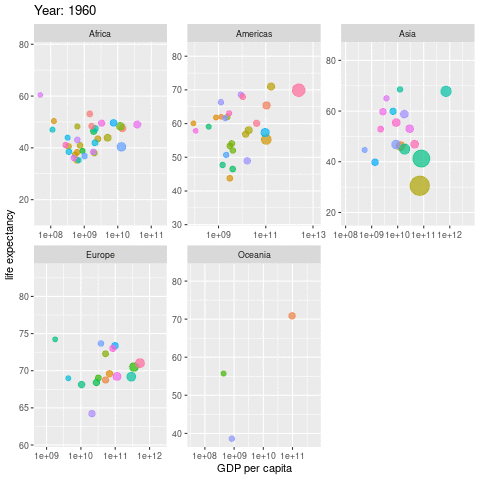